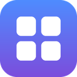

Przeciągnij kafelek poza to okno, aby wyjąć go z folderu.
Import z zakładek Chrome
Wybierz folder zakładek. Podfoldery staną się folderami w kafelkach.
Kafelki
Układ
Liczba kolumn
Ile kafelków mieści się w jednym rzędzie
Rozmiar kafelków
Pokazuj nazwy
Podpis pod każdym kafelkiem
Kafelek „+ Dodaj”
Po wyłączeniu strony dodasz prawym przyciskiem myszy na tle, ikoną dodatku lub przeciągając link
🔒 Tylko do odczytu
Blokuje przesuwanie, edycję i usuwanie – kafelki można tylko otwierać
Notatki pod kafelkami
Notatkę dodasz w edycji kafelka; zawsze widać ją też po najechaniu myszą
Zakładka „Ostatnio zamknięte”
Karty zamknięte przez pomyłkę – przywrócisz jednym kliknięciem
Otwieraj w nowej karcie
Kliknięcie kafelka nie zamyka strony startowej
Wygląd kafelków
Styl kafelków
Wielkość ikon
Dla wszystkich kafelków; pojedynczy kafelek zmienisz w jego edycji lub menu (➕/➖)
Obramowanie kafelków
Cienka ramka wokół kafelka
Efekt po najechaniu
Jak reaguje kafelek pod kursorem myszy
Tło kafelków
0% – całkowicie przezroczyste, widać tapetę (układ klasyczny)
Ikony stron
Jakość ikon
Ikony prosto ze stron
Szuka najlepszej ikony na każdej stronie (SVG, 180–512 px)
✓ Włączone
Pobierz wszystkie ikony od nowa
Gdy strona zmieniła logo albo ikona wygląda źle
Pojedynczą ikonę odświeżysz z menu kafelka (⋯ → Odśwież ikonę), a własną wgrasz w edycji kafelka.
Strony – działanie i nowości
Sprawdzaj, czy strony działają
Kafelek dostaje czerwoną kropkę, gdy strona nie odpowiada
Jak często
Dotyczy też obserwowania nowości (👁 w menu kafelka)
Powiadomienia o nowościach
Dymek w Windows, gdy na obserwowanej stronie pojawi się coś nowego
Sprawdź teraz
Dodatki
Podgląd strony zamiast logo
Zrzut ekranu z ostatniej wizyty na stronie
Utwórz podglądy wszystkich stron
Strony otworzą się kolejno w osobnym oknie, które zamknie się samo.
Liczniki powiadomień
Np. nieprzeczytane maile w Gmailu, wiadomości na Facebooku
ℹ️ Podglądy odświeżają się też same, gdy odwiedzasz stronę (najczęściej co 2 godziny). Zostają tylko na tym komputerze.
Gotowe motywy
Ustawienia
🔍 Wyszukiwarka na stronie
Pasek wyszukiwania nad kafelkami – wyłącz, jeśli szukasz z paska adresu
Układ strony
Klasyczny: nazwy nad kafelkami, ramki, podglądy stron, ciemne deski
Motyw
Kolory okien, menu i napisów
Zegar i data
Nazwy kafelków
Czcionka
Wielkość
Pogrubienie
Kolor
Wyszukiwanie
Wyszukiwarka
Rodzaj tła
Wybierz gradient
Kolor tła
Zdjęcie
JPG lub PNG z dysku
Zdjęcia do rotacji
Zmieniaj:
✋ Kadr zdjęcia
Przeciągnij tło myszą i przybliż kółkiem, żeby wybrać widoczny fragment
Przyciemnienie
Poprawia czytelność napisów na zdjęciu
Animowane tło
✨ Efekt
Delikatna animacja na tle – zatrzymuje się, gdy karta jest w tle
Ilość
Pokazuj pogodę
W lewym górnym rogu; najedź myszką, by zobaczyć prognozę
Miejscowość
Ostrzeżenie o deszczu
Parasol ☔ przy pogodzie, gdy w ciągu 3 godzin ma padać
Dane pogodowe: Open-Meteo, odświeżane co 30 minut. Po najechaniu na pogodę: prognoza godzinowa, 4 dni oraz wschód i zachód słońca.
Notatnik i zadania 📝
Przycisk w prawym górnym rogu: lista zadań do odhaczania i notatki. Synchronizują się razem z kafelkami.
Kursy walut
Pokazuj kursy walut
Średnie kursy NBP w prawym górnym rogu, ze strzałką zmiany od poprzedniego dnia
Waluty
Odliczanie
Pokazuj odliczanie
Pod zegarem, np. „Urlop · za 23 dni”. Minione jednorazowe daty znikają same.
Kursy walut: Narodowy Bank Polski (api.nbp.pl), odświeżane co 3 godziny w dni robocze.
Przycisk wiadomości 📰
Panel z najnowszymi wpisami z wybranych stron i forów
Ile wiadomości pokazywać
Dodaj kanał
Adres strony lub kanału
Wystarczy adres strony, np. lowcygier.pl – kanał RSS znajdzie się sam
Wykryj w moich kafelkach
Sprawdza strony z kafelków i dodaje te, które mają kanał RSS
Twoje kanały
Synchronizuj przez konto Google
Te same kafelki na każdym komputerze z Twoim kontem w Chrome
PIN do prywatnych grup
Grupę zablokujesz prawym kliknięciem na jej zakładce → „Zablokuj PIN-em”. Po odblokowaniu grupy są dostępne przez 15 minut.
PIN chroni przed przypadkowym podejrzeniem – to nie jest szyfrowanie.
Zakładki Chrome
Zamień folder zakładek w grupę kafelków
Duplikaty
Znajdź te same strony w różnych grupach i folderach
Eksport do pliku
Wszystko: kafelki, grupy, ustawienia, obrazy, podglądy stron i tła (.json)
Import z pliku
Wczytaj plik kopii (to samo co „Przywróć kopię”) – zastępuje obecne kafelki
Automatyczna kopia zapasowa
Rób kopię
Plik .json w folderze Pobrane → MojaKarta-kopie
Kopia teraz
♻️ Przywróć kopię
Wybierz plik moja-karta-RRRR-MM-DD.json z folderu Pobrane → MojaKarta-kopie. Wróci wszystko: kafelki, grupy, ustawienia, obrazy i podglądy.
Strefa zagrożenia
Przywróć domyślne
Usuwa wszystkie kafelki, grupy i ustawienia
Otwórz kafelek 1–9
Alt + 1…9
…w nowej karcie
Alt + Shift + 1…9
Poprzednia / następna grupa
Ctrl + ← / →
Wyszukiwanie
/
Zamknij okno / menu, odznacz kafelki
Esc
Zaznacz kafelek / zakres
Ctrl+klik · Shift+klik
Zaznacz wszystkie / usuń zaznaczone
Ctrl+A · Delete
Przytrzymaj Alt, aby zobaczyć numery kafelków. Skróty działają, gdy kursor jest na stronie, a nie w pasku adresu – wystarczy raz kliknąć tło.
Usunięte kafelki, foldery i grupy są tu przez 30 dni.

Moja Karta
Autor
Opis
Twoja strona startowa w Chrome: kafelki ulubionych stron z grupami i folderami, podglądy stron, ikony wysokiej jakości, pogoda, tapeta dnia, liczniki powiadomień, prywatne grupy z PIN-em i synchronizacja przez konto Google.
Strona startowa
Otwieraj Moją Kartę przy starcie przeglądarki
Przydatne w Operze, która nie pozwala dodatkom zastąpić nowej karty
Adres Mojej Karty
Wklej go w ustawieniach przeglądarki jako stronę startową / domową · przeglądarka:
ℹ W Operze nowa karta zawsze pokazuje Szybkie wybieranie Opery. Moją Kartę otworzysz ikoną dodatku na pasku albo ustaw ją jako stronę startową: Ustawienia Opery → „Przy uruchomieniu” → „Otwórz określoną stronę” → wklej adres powyżej.
Twoje kafelki i ustawienia są zapisane tylko w Twojej przeglądarce (oraz na koncie Google, jeśli włączysz synchronizację).